12 Batanes Tourist Spots You Can’t Say No To
Batanes, the smallest province in the Philippines, is an off-the-track destination for most people despite the fact that you can’t even figure out what’s the best Batanes tourist spot as you’ll get lost in the overflowing majestic scenery.
Frankly, not everyone can afford to fly to Batanes because the airfare is over the top. But as many have told, it’s definitely worth it. Because with a postcard-like scenery, how can you say no to Batanes?
The views are breathtaking, stunning panoramas evoking feelings of peace and contentment. With a unique landscape that some might compare to the highlands of Scotland, the rolling hills of Iceland, and the vast greenery of New Zealand, you’d wonder if you’re still in the Philippines.
Whether it will be your first time seeing one of the country’s most breathtaking destinations or you’re planning to go back to rediscover the place, Batanes has a lot of amazing spots that are worth your time
12 Most Beautiful Batanes Tourist Spots You Shouldn’t Miss
Batanes, as they say, takes its visitor’s breath away. With its majestic views, it’s no doubt that travelers always include Batanes in their bucket list. Here are the must-visit Batanes tourist spots for a fun-filled trip:
- Racuh A Payaman (Marlboro Country)
- Alapad Hill and Rock Formation
- Basco Lighthouse
- Tayid Lighthouse
- Honesty Coffee Shop
- Morong Beach
- Valugan Boulder Beach
- House of Dakay
- Savidug Stone Houses
- Mt. Carmel Chapel
- Vayang Rolling Hills
- Chawa View Deck
1. Racuh A Payaman (Marlboro Country)

If we’re to describe Racuh A Payaman in one word, it’d be magical. There are rolling hills and knolls everywhere, surrounded by a carpet of the greenest grass you’ll ever see, that you’ll notice even the tiniest grass is swaying as Batanes wind blows. You could almost imagine being in the 1965 film Sound of Music and hear Julie Andrews sing “the hills are alive…”
From there, you can also see the Mt. Iraya, Diura Beach, Tayid Lighthouse, and the Pacific Ocean. All in one place. Racuh A Payaman is definitely the most beautiful Batanes tourist spot!
2. Alapad Hill and Rock Formation
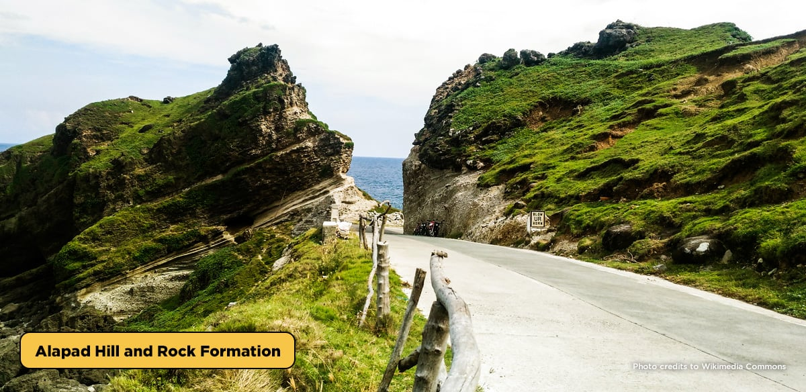Located at Barangay Imnajbu, Alapad Hill and Rock Formation is a marvelous hill with a view deck where you can gaze upon the view of the ocean. Before reaching Alapad Hill and Rock Formation, you will totally enjoy the most scenic road in Batan Island which is the Imnajbu Road Cliffs where the famous scene from the 1991 movie Hihintayin Kita sa Langit starring Dawn Zulueta and Richard Gomez.
3. Basco Lighthouse
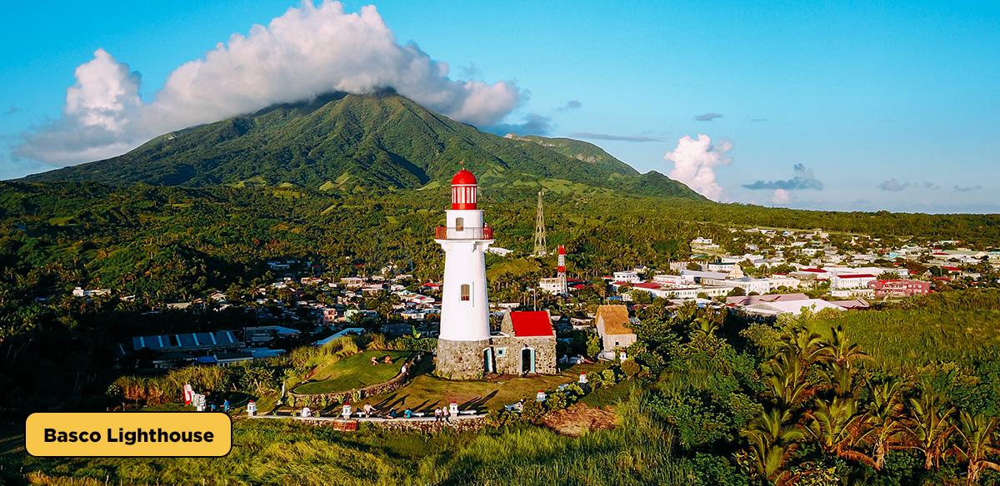When talking about lighthouses in the Philippines, Batanes is always on the list. The 66-ft tower Basco Lighthouse provides an unobstructed 360-degree view of the Mt. Iraya, Basco town proper, Basco port, and the West Philippine Sea.
Basco Lighthouse was also the previous location of American telegraph facilities linking Batanes to the central government until it got demolished due to the bombing of the Japanese Imperial Army at the beginning of World War II.
4. Tayid Lighthouse
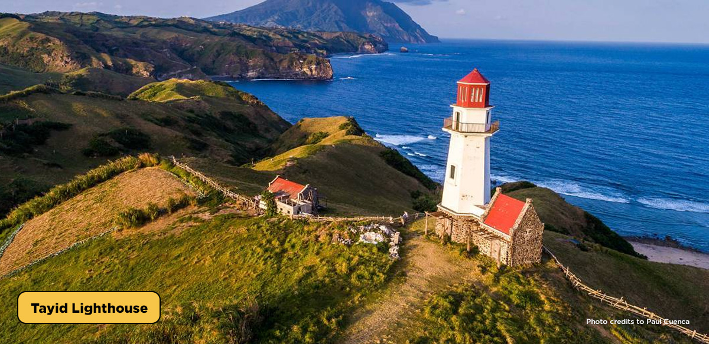Of all the lighthouses in Batanes, Tayid Lighthouse is the most beautiful. Unlike other lighthouses, Tayid has a hexagonal tower deck. Once up there, you’ll get to see a great view of the Diura Fishing Village, Mt. Iraya, and the Pacific Ocean. Originally built to guide the local fishermen, Tayid Lighthouse now doubles as a popular Batanes tourist spot.
5. Honesty Coffee Shop
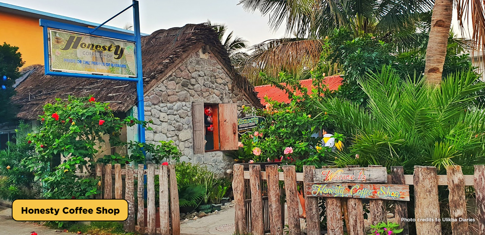Honest Coffee Shop undoubtedly is a famous Batanes tourist spot because of its unique service. Would you believe that no one mans the store? It’s what made them famous. Customers can buy food and souvenirs there and put the payment on the counter. There’s also a kubo and hammocks down the shop, in front of a calming beach.
6. Morong Beach
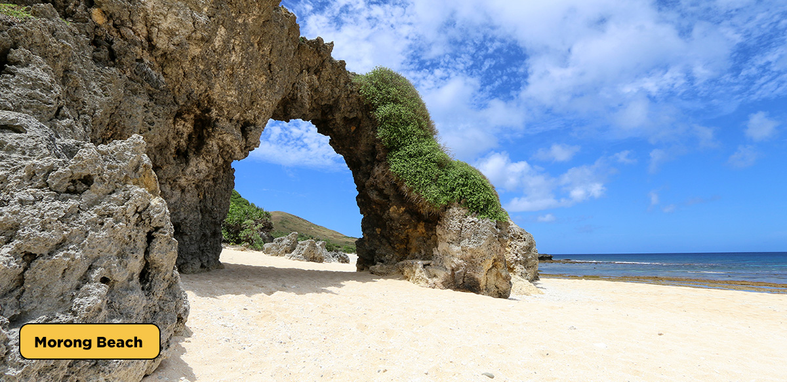Batanes is known for many things but not for white-sand beaches. However, you can find a serene and equally pristine white beach in Sabtang Island. Morong Beach is one of the most famous places to visit in Batanes. It doesn’t get too crowded and if you’re lucky, you can enjoy to beach all to yourself.
7. Valugan Boulder Beach
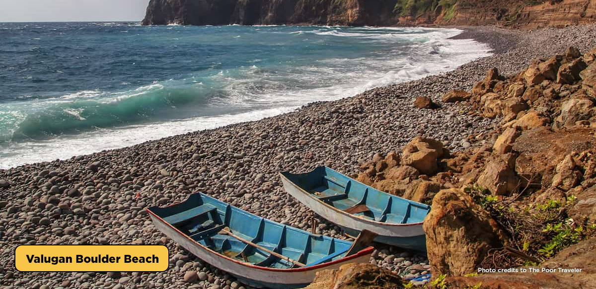It is believed that the boulders were washed ashore during a volcanic eruption on the island centuries ago. Once you get there, you’ll notice that there are a lot of rock formations made out of the boulders on the beach. You, too, can make one! But what really makes Valugan Boulder Beach a beautiful destination is that you can hear the music of its rolling stones as they are pushed by endless waves. The rhythm matches the strong winds that blow.
8. House of Dakay
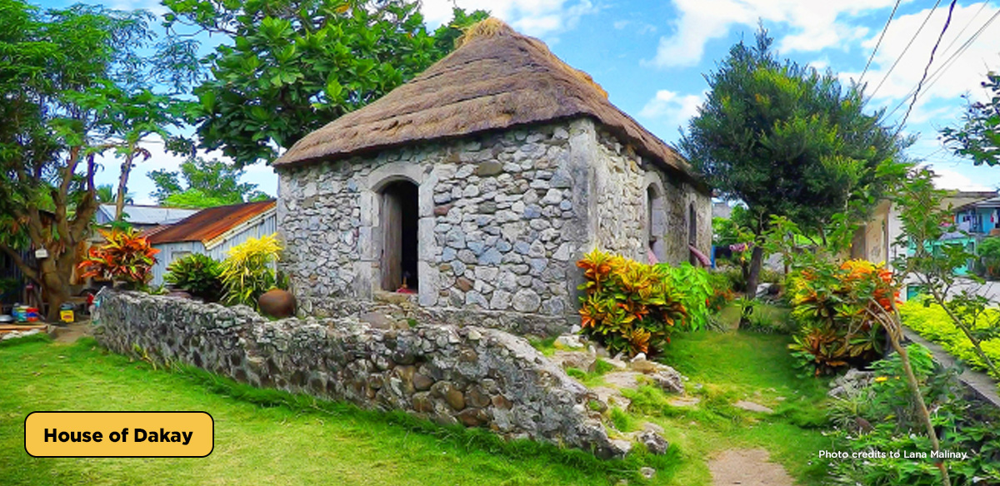House of Dakay in Ivana is said to be the oldest stone house in Batanes built in 1887. This traditional structure is considered as a heritage treasure of Batanes, and cannot be found anywhere else in the Philippines. House of Dakay, like other stone houses, is designed to be firm, providing shelter that will last from the storm and strong winds on the island which is located along the typhoon belt. The UNESCO even acknowledged this as a world heritage building.
9. Savidug Stone Houses
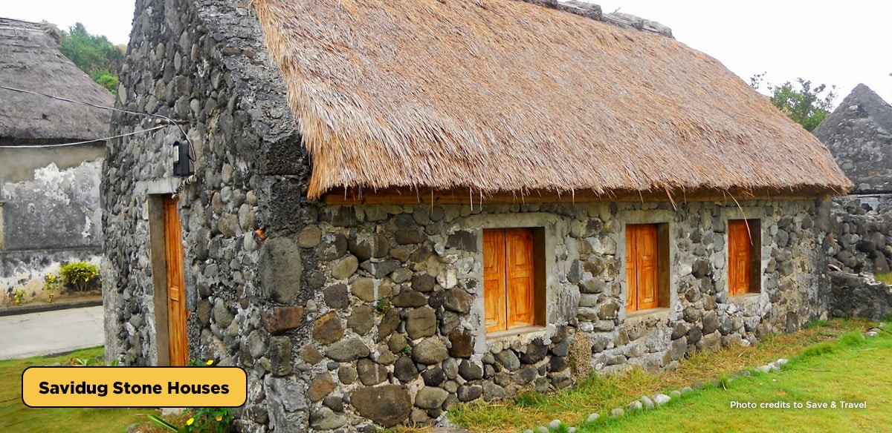A Batanes travel guide won’t be complete without Savidug Stone Houses in it. Savidug Stone Houses are the primary type of houses in Batanes, particularly in Sabtang Island. The Ivatans maintain these houses, and this village, together with Chavayan, remains untouched where locals still live traditionally
The structure of the Savidug Stone Houses is considered as a Sinadumparan type, one of the traditional houses in Batanes. This village is one of the main highlights of the Sabtang Island tour.
10. Mt. Carmel Chapel
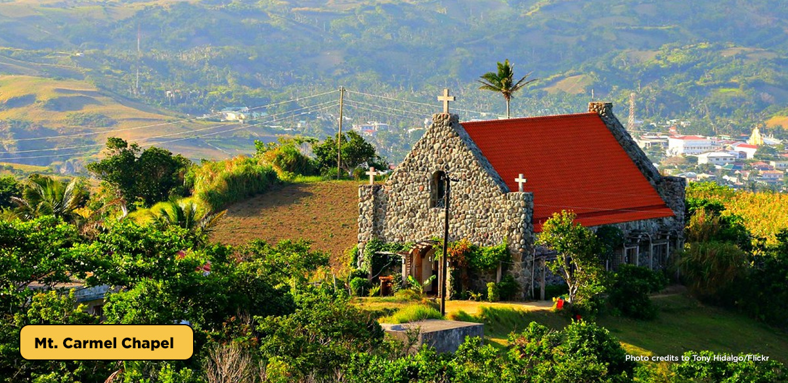There are many churches in Batanes but one that stands out the most is the Mt. Carmel Chapel. Popularly known as Tukon Church, it was built by local artisans heavily inspired by the Ivatan stone houses.
11. Vayang Rolling Hills
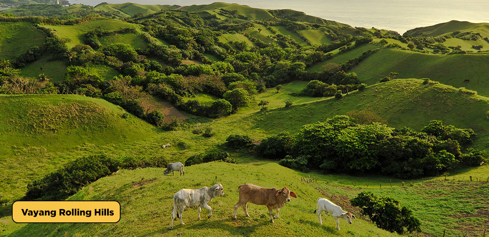There can never be too many rolling hills in Batanes. Seriously, the province never runs out of it. One popular Batanes tourist spot is the Vayang Rolling Hills that gives you an unobstructed view of the stunning Mt. Iraya, Batan, Sabtang, and Itbayat Islands, all at once.
12. Chawa View Deck
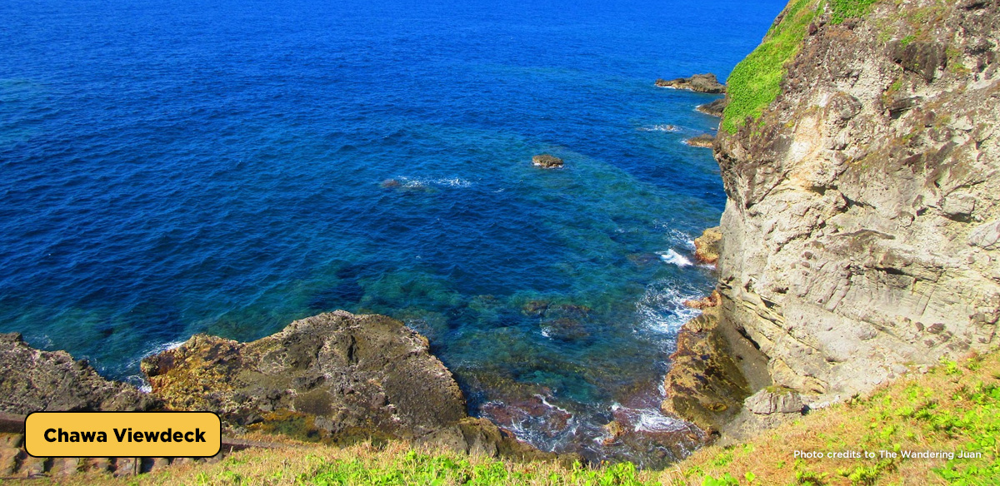If you want to see Batanes on a high point (literally), never miss the Chawa View Deck. It is one of the highest areas in South Batan Island in Batanes that offers an overlooking view of the West Philippine Sea.
What makes this attraction one of the most famous places to visit in Batanes is the winding stairs with more than a hundred steps leading to the rocky shore facing the sea. At the bottom of the stairs is a “mini pool,” that has a different color from that of the ocean water and settles down inside a small area.